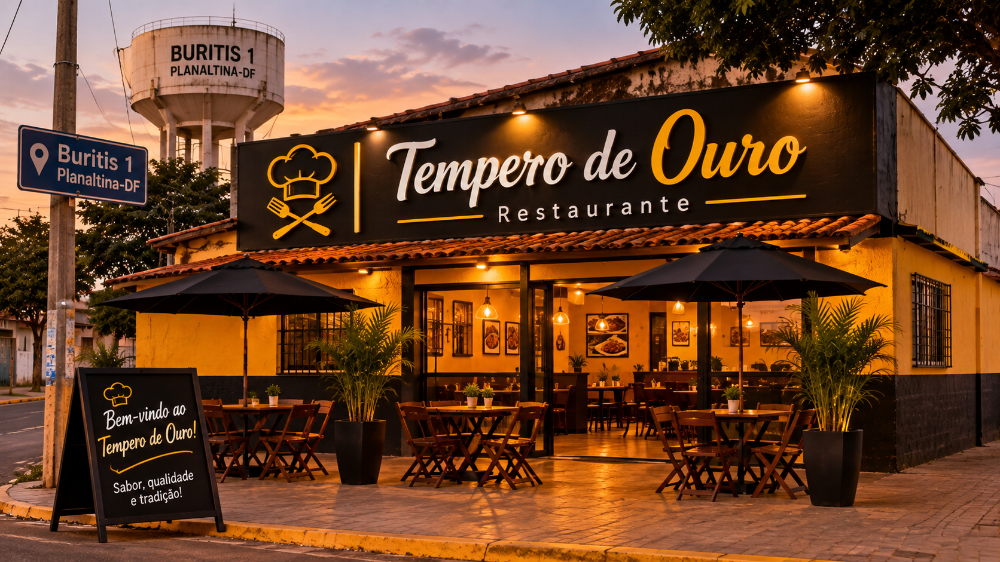
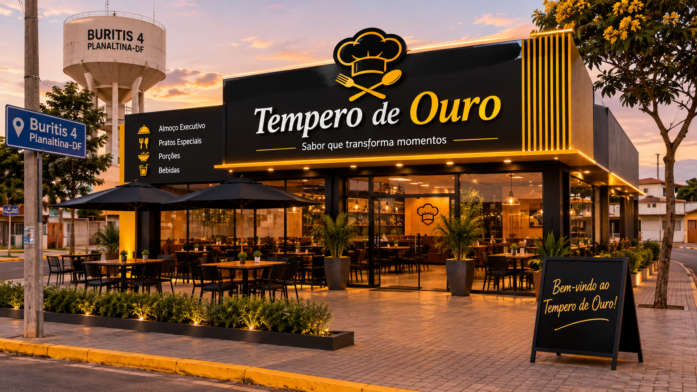
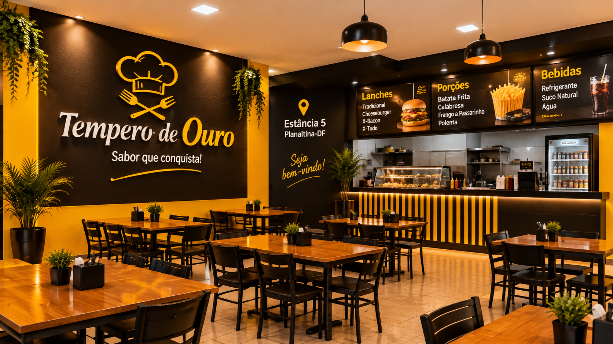
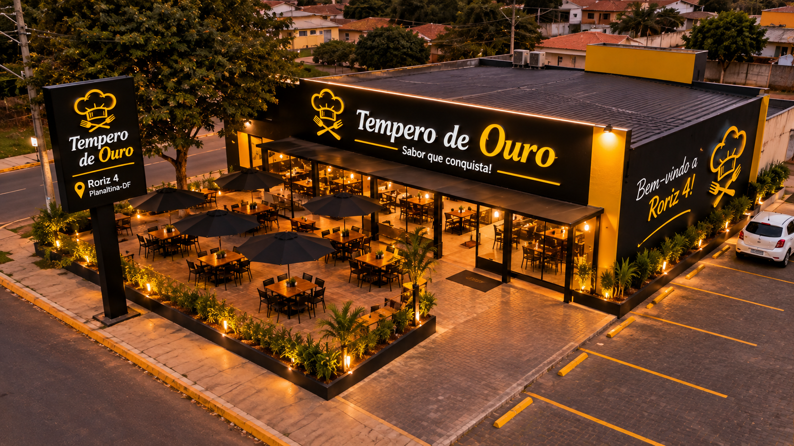
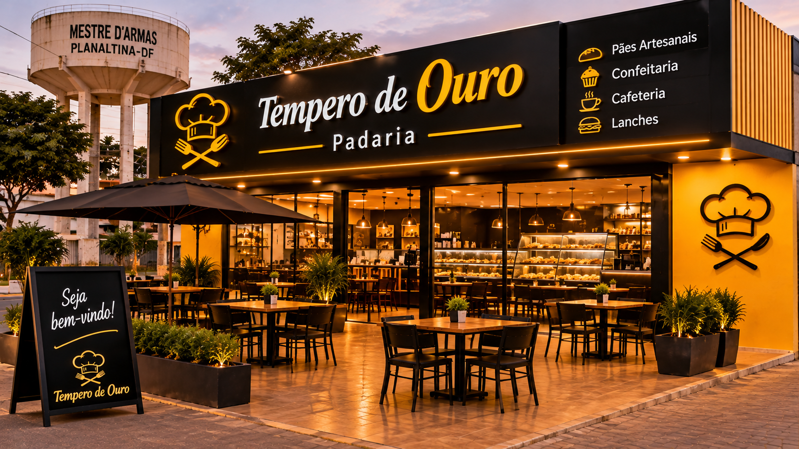

Buritis I
Tempero de Ouro

Edição especial
Conheça os sabores de Buritis I e aproveite uma seleção de pratos preparados para valorizar a gastronomia e os estabelecimentos da região.
Buritis IV
Tempero de Ouro

Edição especial
Uma oportunidade para descobrir novos lugares, conhecer opções gastronômicas e valorizar os comerciantes de Buritis IV.
Estância 5
Tempero de Ouro

Edição especial
Sabores, encontros e boas experiências: conheça a diversidade de opções gastronômicas presentes na comunidade da Estância 5.
Roriz IV
Tempero de Ouro

Edição especial
Venha conhecer os estabelecimentos de Roriz IV e aproveitar uma experiência que reúne gastronomia, cultura e convivência local.
Mestre d'Armas
Tempero de Ouro

Edição especial
Uma celebração da culinária local, reunindo moradores e visitantes para conhecer os sabores e os espaços de Mestre d'Armas.